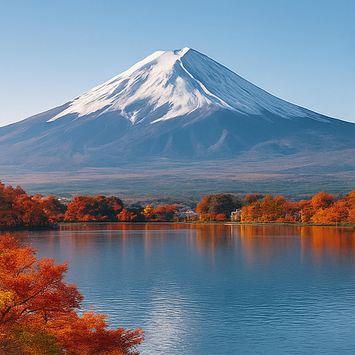

Mount Fuji – Ewiges Symbol der Natur, Kultur und Spiritualität Japans
Mit einer Höhe von 3.776 Metern ist der Mount Fuji (富士山, Fujisan) nicht nur der höchste Berg Japans – er ist ein nationales Symbol, ein spiritueller Ort und ein weltweites Sinnbild für die Harmonie zwischen Mensch und Natur. Perfekt symmetrisch, ewig schneebedeckt und reich an Mythologie, hat der Mount Fuji Poeten, Pilger, Maler und Abenteurer seit über tausend Jahren inspiriert.
UNESCO-Welterbe und heiliger Gipfel
Seit 2013 gehört der Mount Fuji zum UNESCO-Welterbe. Er wird nicht nur wegen seiner natürlichen Schönheit verehrt, sondern auch als spiritueller Ort. Bereits im 7. Jahrhundert begaben sich Pilger auf den Aufstieg zum Gipfel, um Reinigung und Erleuchtung zu erfahren. Schreine säumen den Fuß des Berges, Steintafeln markieren die Wege, und der Aufstieg selbst gilt als Metapher für den persönlichen Lebensweg.
Mount Fuji besteigen – Ein unvergessliches Abenteuer
Eine Besteigung des Mount Fuji ist eine einmalige Erfahrung im Leben. Die offizielle Saison dauert von Anfang Juli bis Anfang September, wenn Hütten und Sicherheitsdienste in Betrieb sind. Es gibt vier Hauptwege: Yoshida, Subashiri, Gotemba und Fujinomiya, jeder mit eigenen Aussichten und Herausforderungen.
Viele Wanderer starten nachts, um den Gipfel bei Sonnenaufgang zu erreichen und das majestätische Goraiko (die Morgendämmerung) über den Wolken zu erleben. Dieses spirituelle Erlebnis bleibt für immer im Herzen.
Die Fuji Five Lakes Region
Am nördlichen Fuß des Mount Fuji liegt die Region der Fuji Five Lakes (Fujigoko) – einschließlich Kawaguchi-, Yamanaka- und Motosu-See – mit spektakulären Ausblicken, heißen Quellen, Wanderwegen und traditionellen Ryokans. Für Besucher, die den Berg nicht besteigen möchten, bieten die Seen Postkartenpanoramen in alle Richtungen.
Kultur, Kunst und Legenden
Der Mount Fuji inspiriert seit jeher Künstler und Schriftsteller. Er erscheint häufig in Ukiyo-e-Drucken, besonders in Hokusais Serie "36 Ansichten des Mount Fuji". In der alten Shinto-Tradition gilt er als Wohnsitz einer Berggottheit (Kami). Auch heute noch steht seine Form für Perfektion, Resilienz und Transzendenz.
Praktische Tipps für Besucher
- 🌸 Empfohlene Aussichtspunkte: Chureito-Pagode, Kawaguchi-See und Hakone
- 🌸 Beste Zeit für die Besteigung: Anfang Juli – Anfang September
- 🌸 Morgendämmerung-Erlebnis: Abfahrt von der fünften Station um ca. 21:00 Uhr
- 🌸 Anreise: Express-Bus von Shinjuku nach Kawaguchiko / fünfte Station Subaru
- 🌸 Tipp: Reservieren Sie Hütten im Voraus während der Besteigungssaison
Warum der Mount Fuji ein Muss ist
Ob Sie den Gipfel erklimmen, Postkartenfotos machen oder einfach seine majestätische Energie aus der Ferne genießen möchten – der Mount Fuji ist ein unverzichtbares Ziel für jeden Japan-Reisenden. Er ist mehr als ein Berg – er ist das Herz der spirituellen und natürlichen Schönheit Japans.
Tags: Mount Fuji, Mount Fuji besteigen, Fujisan, Japan Reisen, Fuji Five Lakes, Sonnenaufgang Wanderung Japan, ikonische Orte Japan, Vulkan Japan, Natur und Kultur Japan, spirituelle Berge
Planen Sie Ihren Besuch am Mount Fuji?
Für ein wirklich intensives und bedeutungsvolles Erlebnis empfehlen wir, einen zertifizierten privaten Guide unseres Teams zu buchen. Alle unsere Guides sind offiziell vom japanischen Staat anerkannt und bieten individuell angepasste Touren nach Ihren Interessen an. Kontaktieren Sie Ihre ausgewählte Guide im Voraus, um Verfügbarkeit zu prüfen und professionelle Unterstützung für Ihre Reise zu erhalten.